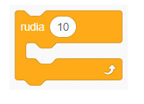
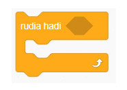
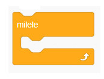

Hii inamaanisha kuwa kuna aina tatu za kurudiwa kwa kazi kwenye programu, ambazo ni rudia ( ), rudia hadi ( ) na milele. Kwa kitanzi cha rudia ( ), thamani iliyo ndani ya mabano inaonyesha ni mara ngapi kitendo kitajirudia. Kwa kitanzi cha rudia hadi ( ), thamani ndani ya mabano inaonyesha sharti litakalosababisha kitanzi kisimame. Kitanzi cha milele kitaendelea kutekelezwa bila kikomo hadi utakapokisimamisha mwenyewe au kutumia kizuizi cha komesha. Katika Scratch, vitanzi hivi vinapatikana kwenye bloku za Kidhibiti. Angalia au sikiliza maelezo ya Kielelezo namba 6.



Kielelezo namba 6: Aina za vitanzi katika Scratch
Hivyo, unatumia kitanzi cha rudia ( ) unapohitaji kurudia kitendo kwa idadi maalum. Unatumia kitanzi cha rudia hadi ( ) unapohitaji kurudia kitendo hadi hali fulani itokee na unatumia milele unapohitaji kurudia kitendo bila kikomo. Kazi za kufanya namba 5 hadi 7 zinaonesha jinsi ya kutumia miundo ya kudhibiti marudio katika programu.